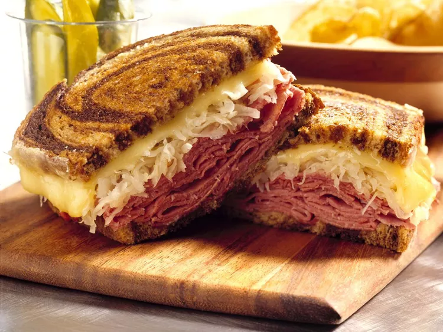

Reuben Sandwich

Description
Here's a classic recipe for a delicious Reuben sandwich
Ingredients
- 8 slices rye bread
- 1 pound thinly sliced corned beef
- 1 cup sauerkraut, drained
- 8 slices Swiss cheese
- 1/2 cup thousand island dressing
- 4 tablespoons unsalted butter, softened
Steps
- Preheat a griddle or a large skillet over medium heat.
- Lay out 4 slices of rye bread and spread a generous amount of thousand island dressing on each slice.
- Layer corned beef, sauerkraut, and Swiss cheese evenly on each of the 4 slices.
- Top each sandwich with the remaining 4 slices of rye bread.
- Spread softened butter on the outer sides of each sandwich.
- Place the sandwiches on the preheated griddle or skillet and cook until the bread is toasted and the cheese is melted, about 3-4 minutes per side.
- Press the sandwiches down with a spatula as they cook to flatten them slightly.
- Once the bread is golden brown and the cheese is melted, remove the sandwiches from the griddle.
- Allow them to cool for a minute before slicing diagonally and serving.